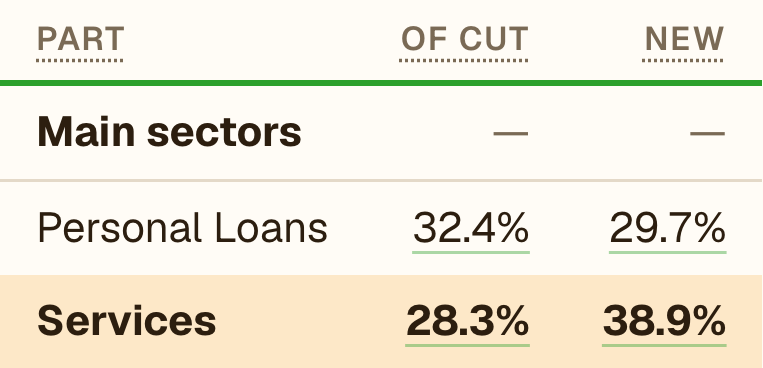

India Credit Lens · Sep 2026 · Lenders
The new money goes to lenders
1
Services take the growthFar more than their share of the book.
2
Inside services, NBFCsBank credit to them is growing fastest in our data.
3
NBFCs lend it to retail, and goldGold loans lead NBFC retail growth.
1 · Bank credit
Services: most of the growth
Services grew 28.3%. Non-food credit grew 19.1%.

NEW = share of the year's growth
In a month, services' yearly growth went from 24.3% to 28.3%.
2 · Bank credit to services
Inside services: NBFCs
₹22.53L Cr, growing 41.8%: the fastest in our data.
In a month, yearly growth went from 37.5% to 41.8%.
3 · Bank credit to NBFCs
Not all of it is the NBFCs you'd think of
+79.7%
public financial institutions
and
Housing finance companies grew 19.7%.
In a month, PFIs' yearly growth went from 83.7% to 79.7%.
4 · NBFC credit
What NBFCs lend: retail
NBFC credit grew 15.4%. Retail grew 21.9%.
In a month, NBFC credit growth went from 15.8% to 15.4%. Retail's share of the growth: 57.8% to 58.6%.
5 · NBFC retail
Gold leads NBFC retail
Housing, the biggest retail book, took 20.1%.
Is bank money now funding NBFC retail, and gold? If you work at an NBFC, what am I missing?
In a month, gold's yearly growth went from 69.1% to 66.1%.